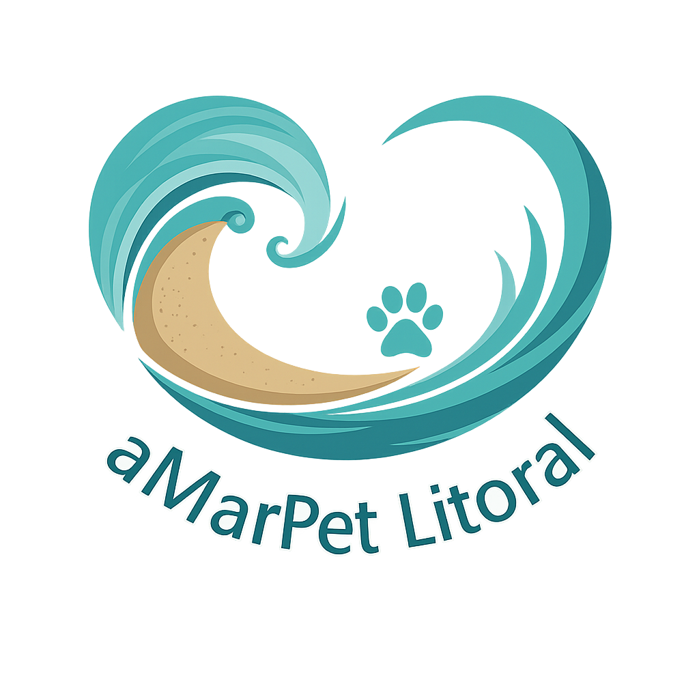

Sobre
- O aMarPet Litoral é uma iniciativa desenvolvida como projeto de extensão por uma estudante do curso de Análise e Desenvolvimento de Sistemas, com o propósito de utilizar a tecnologia como ferramenta de impacto social.
Esta página foi criada para aproximar doadores, organizações não governamentais (ONGs) e protetores independentes de animais do Litoral Norte do Estado de São Paulo, facilitando a divulgação e incentivando ações de solidariedade em prol da causa animal.
O código-fonte do projeto está disponível no GitHub, através do link abaixo promovendo transparência na iniciativa.
Mais do que um projeto acadêmico, este espaço é dedicado a todas as pessoas que acreditam na importância da proteção, do respeito e do cuidado com os animais.
GitHub do projeto:
- https://github.com/izabela-santana/projeto-amarpetlitoral